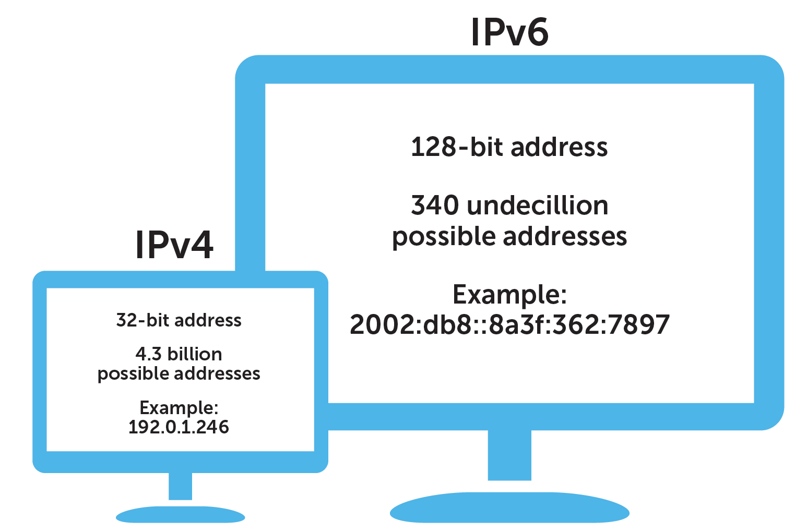

Обзор
История IPv6
IPv6 (Internet Protocol version 6) был разработан как ответ на исчерпание адресного пространства в предыдущей версии протокола — IPv4. Протокол IPv4, появившийся в 1981 году, использует 32-битные адреса, что дает около 4,3 миллиарда уникальных IP-адресов. С развитием интернета, ростом количества пользователей, мобильных устройств и IoT-устройств стало ясно, что этого объема недостаточно для будущего масштабирования сети.
Работа над IPv6 началась в 1994 году под руководством IETF, а в 1998 году был опубликован официальный стандарт — RFC 2460. Новый протокол использует 128-битные адреса, что позволяет создать примерно 3,4×10³⁸ уникальных адресов. Помимо огромного адресного пространства, IPv6 включает улучшения в маршрутизации, встроенную поддержку безопасности (IPsec) и устранение необходимости в NAT — технологии, которая маскировала нехватку адресов в IPv4.
Переход на IPv6 оказался постепенным и технически сложным, так как существующие устройства и сети были ориентированы на IPv4. Чтобы упростить миграцию, была внедрена модель dual stack, при которой оба протокола работают параллельно. Знаковым событием стало проведение World IPv6 Launch Day в 2012 году — тогда ведущие интернет-компании начали постоянную поддержку IPv6.
Сегодня внедрение IPv6 продолжается по всему миру: одни страны и провайдеры продвинулись дальше, другие — медленнее. Однако в целом IPv6 постепенно становится стандартом, открывая путь к более устойчивому, масштабируемому и современному интернету.
Основные характеристики
IPv6 представляет собой современный сетевой протокол, пришедший на смену IPv4, и обладает рядом важных особенностей, обеспечивающих его гибкость, масштабируемость и безопасность. Вот его ключевые характеристики:
- 128-битная адресация: Каждый IP-адрес состоит из 128 бит, что позволяет создать около 3,4×10³⁸ уникальных адресов. Это практически устраняет проблему нехватки IP-адресов в будущем.
- Формат адреса: IPv6-адрес записывается как восемь групп из четырёх шестнадцатеричных цифр, разделённых двоеточиями (например, 2001:0db8:85a3:0000:0000:8a2e:0370:7334). Последовательности нулей могут быть сокращены для удобства.
- Без NAT: В отличие от IPv4, IPv6 не требует использования NAT (Network Address Translation), поскольку адресного пространства достаточно, чтобы каждому устройству в сети можно было присвоить уникальный внешний адрес.
- Автонастройка (Stateless Address Autoconfiguration): Устройства могут автоматически получать IPv6-адрес при подключении к сети, без необходимости использовать DHCP.
- Встроенная поддержка безопасности: IPv6 изначально включает IPsec — набор протоколов для обеспечения шифрования, аутентификации и целостности передаваемых данных.
- Упрощённая маршрутизация: Благодаря иерархической структуре адресов и более эффективной агрегации маршрутов, IPv6 снижает нагрузку на маршрутизаторы и ускоряет передачу данных.
- Расширяемость протокола: IPv6 использует расширяемую систему заголовков, что позволяет легко добавлять новые функции без нарушения совместимости.
Эти характеристики делают IPv6 не просто заменой IPv4, а более продвинутым решением, рассчитанным на долгосрочное развитие интернета и технологий, завязанных на глобальное сетевое взаимодействие.
Ключевые отличия от IPv4
IPv6 был создан не только для решения проблемы нехватки адресов, но и как более совершенный и гибкий протокол. По сравнению с IPv4, он обладает рядом принципиальных отличий, отражающих изменения в архитектуре и подходах к работе с сетью.
Главное и самое очевидное отличие — это длина IP-адреса. IPv4 использует 32 бита, что ограничивает количество адресов до примерно 4,3 миллиарда. В IPv6 адреса состоят из 128 бит, что позволяет задать число адресов, фактически неисчерпаемое с точки зрения современных потребностей. Это обеспечивает возможность индивидуальной адресации для каждого устройства, без необходимости использовать NAT.
IPv6 также предлагает улучшенную систему конфигурации. Если в IPv4 часто требуется ручная настройка или использование DHCP-серверов, то в IPv6 предусмотрена функция автоконфигурации — устройство может самостоятельно получить адрес и подключиться к сети без дополнительного вмешательства. Кроме того, IPv6 избавляет от многих ограничений, связанных с маршрутизацией, и упрощает её за счёт иерархической структуры адресов.
Существенным новшеством стало включение механизмов безопасности уже на уровне протокола: IPv6 изначально поддерживает IPsec, обеспечивая возможность шифрования и аутентификации трафика. В IPv4 такие механизмы внедрялись дополнительно и далеко не всегда применялись. Также стоит отметить, что в IPv6 отсутствуют широковещательные сообщения (broadcast), что снижает нагрузку на сеть — вместо них используются более эффективные методы доставки данных, такие как multicast и anycast.
Преимущества
Большой адресный пул для IoT и будущего роста сети
Одним из фундаментальных преимуществ IPv6 является адресное пространство в 128 бит, что даёт возможность создать около 3,4×10³⁸ уникальных IP-адресов. Это практически неисчерпаемый резерв, особенно по сравнению с IPv4, где доступно лишь около 4,3 миллиарда адресов. Такое расширение открывает новые горизонты для развития глобальной сети.
Это особенно важно в контексте интернета вещей (IoT), где каждое устройство — будь то «умная» лампочка, датчик температуры или автомобиль — требует собственного IP-адреса. IPv6 позволяет присваивать уникальный публичный адрес каждому устройству, что упрощает их управление, мониторинг и прямую коммуникацию, особенно в масштабируемых автоматизированных системах.
Встроенная поддержка IPsec
В отличие от IPv4, где IPsec был опцией и применялся в ограниченных сценариях, IPv6 нативно поддерживает IPsec как неотъемлемую часть. Это означает, что каждый узел в IPv6-сети потенциально может использовать механизмы шифрования, аутентификации и защиты целостности передаваемых данных.
IPsec включает два основных режима — транспортный и туннельный. Они позволяют защищать либо только полезную нагрузку пакета, либо весь IP-пакет целиком, создавая защищённый «туннель». Благодаря встроенности IPsec, IPv6 создаёт базу для более безопасной сетевой архитектуры, особенно в корпоративных сетях, VPN-решениях и инфраструктурах, требующих высокого уровня доверия.
Улучшенная маршрутизация
IPv6 предлагает более эффективную маршрутизацию, благодаря иерархическому распределению адресов. Структура адресов позволяет сгруппировать их по регионам, провайдерам или организациям, что упрощает агрегацию маршрутов и уменьшает размер таблиц маршрутизации на маршрутизаторах и ускоряет передачу данных.
IPv6 также упрощает обработку пакетов за счёт упрощённого заголовка по сравнению с IPv4. Заголовки IPv6 имеют фиксированную длину и стандартизированную структуру, что облегчает работу маршрутизаторов и повышает общую производительность сети. Это особенно важно в условиях высокой нагрузки и требовательных к скорости приложениях.
Метки потоков и QoS
Одним из новых элементов в заголовке IPv6 стал параметр Flow Label — метка потока. Она используется для идентификации трафика, принадлежащего к одному логическому потоку (например, видеозвонок, стриминг, игра), даже если пакеты передаются разными маршрутами. Это позволяет маршрутизаторам более точно и быстро обрабатывать такие потоки, обеспечивая стабильную доставку.
Функциональность меток потоков дополняется возможностями QoS (Quality of Service) — системой приоритезации трафика. Она позволяет выделять приоритетные пакеты (например, голосовой трафик) и обеспечивать им минимальные задержки, даже в условиях перегрузки сети. Это особенно важно для бизнес-приложений, онлайн-конференций, VoIP и других сервисов с критичными требованиями к задержкам и стабильности.
Отсутствие необходимости NAT
В IPv4 из-за ограниченности адресов широко применялась технология NAT (Network Address Translation), которая позволяла скрывать множество устройств за одним публичным IP-адресом. Однако NAT создаёт сложности в работе протоколов, требующих прямого соединения между устройствами, таких как VoIP, P2P и игровые приложения.
IPv6 устраняет эту проблему благодаря своему адресному пространству. Каждое устройство может получить уникальный глобальный IP-адрес, что позволяет устанавливать прямое соединение между узлами, упрощает настройку приложений и повышает прозрачность сетевого взаимодействия. Это также делает диагностику и мониторинг сетей более предсказуемыми и понятными.
Упрощённое сетевое взаимодействие
IPv6 был разработан с целью упрощения архитектуры сети, избавления от временных решений и упрощения конфигурации. Например, благодаря функции Stateless Address Autoconfiguration (SLAAC), устройства могут автоматически получать адреса, не требуя ручной настройки или наличия DHCP-сервера. Это особенно удобно в домашних и мобильных сетях.
Также IPv6 исключает широковещание (broadcast), который часто использовался в IPv4, но приводил к излишней нагрузке на сеть. Вместо него применяются более точные механизмы доставки, такие как multicast и anycast. В результате сети на IPv6 становятся более управляемыми, гибкими и надёжными, с меньшей зависимостью от костыльных решений и промежуточных технологий.
Адресация и автоконфигурация
SLAAC: Stateless Address Autoconfiguration
Один из ключевых механизмов — это SLAAC (Stateless Address Autoconfiguration). С его помощью устройство может автоматически сгенерировать свой IPv6-адрес на основе сетевого префикса, полученного от маршрутизатора, и собственных данных, без обращения к серверу DHCP. SLAAC значительно упрощает процесс подключения устройств, особенно в домашних или мобильных сетях, где участие администратора минимально или вовсе отсутствует.
Когда устройство подключается к сети, оно прослушивает сообщения Router Advertisement (RA), которые рассылаются маршрутизаторами. Эти сообщения содержат информацию о префиксе сети, времени жизни маршрута и других параметрах. Используя эти данные, устройство формирует полный IPv6-адрес.
EUI-64
Для генерации адреса хоста в SLAAC часто используется метод EUI-64, который позволяет создать уникальную идентификаторную часть адреса на основе MAC-адреса устройства. Этот механизм вставляет в MAC-адрес специальные биты и расширяет его до 64-битного идентификатора, который затем добавляется к сетевому префиксу.
EUI-64 обеспечивает автоматическое формирование уникального адреса, но с точки зрения конфиденциальности может быть уязвим, так как MAC-адрес — это аппаратный идентификатор, который может использоваться для отслеживания устройства. В ответ на это в IPv6 были введены temporary addresses, которые меняются со временем и затрудняют слежку.
Локальные адреса
IPv6 предусматривает несколько типов адресов, среди которых особое место занимают локальные (link-local) и уникальные локальные адреса (ULA).
Link-local адреса автоматически присваиваются каждому интерфейсу и используются только в пределах одной локальной сети. Они начинаются с префикса FE80::/10 и необходимы, например, для взаимодействия с маршрутизаторами, отправки RA/RS-сообщений и организации протоколов маршрутизации.
ULA (Unique Local Addresses), начинающиеся с FC00::/7, являются аналогами частных адресов IPv4 (например, 192.168.x.x) и используются внутри организации. Эти адреса не маршрутизируются в глобальном интернете, но могут использоваться для внутренней связности, особенно в изолированных или VPN-сетях.
Router Solicitation / Advertisement
Автоконфигурация в IPv6 строится на взаимодействии между хостами и маршрутизаторами с помощью сообщений Router Solicitation (RS) и Router Advertisement (RA). Когда новое устройство появляется в сети, оно может отправить RS-запрос, чтобы ускорить получение RA от маршрутизатора. RA-сообщение содержит информацию о наличии SLAAC, адресах шлюзов, MTU и других параметрах.
Это позволяет полностью автоматизировать процесс подключения без необходимости настройки вручную или использования дополнительных серверов. RA может также указывать, требуется ли использование DHCPv6 для получения дополнительных параметров, таких как адреса DNS-серверов.
DHCPv6
Хотя SLAAC обеспечивает базовую автоконфигурацию, в некоторых случаях может понадобиться получения более точной информации — например, адресов DNS-серверов, доменных имён или определённых политик. Для этого в IPv6 используется DHCPv6 — расширенная версия DHCP, адаптированная под особенности нового протокола.
DHCPv6 может работать в нескольких режимах:
- Stateful — как и в IPv4, сервер полностью управляет адресами и конфигурацией устройств.
- Stateless — сервер предоставляет только дополнительные параметры (например, DNS), а адрес хост получает через SLAAC.
Это обеспечивает гибкость: администратор может комбинировать SLAAC и DHCPv6 в зависимости от архитектуры сети и требований безопасности или мониторинга.
Адаптация и статистика
Глобальный процент IPv6-пользователей
Переход от IPv4 к IPv6 происходит постепенно, и на данный момент всё больше интернет-провайдеров, сайтов и пользователей используют новый протокол. По данным различных мониторингов (например, Google, APNIC, Akamai), к 2025 году более 40% мирового интернет-трафика уже осуществляется через IPv6. Однако уровень внедрения заметно варьируется от страны к стране.
Эта статистика отражает как готовность инфраструктуры (сетевых устройств, провайдеров, контента), так и государственную политику в сфере цифрового развития. Темпы роста остаются стабильными, и по прогнозам, доля IPv6-трафика будет расти, особенно с увеличением числа IoT-устройств и развитием 5G/6G-сетей.
Крупнейшие страны-пионеры
Лидерами по внедрению IPv6 являются Индия, Бельгия, Германия, США и Япония. Например, Индия демонстрирует одну из самых высоких долей IPv6-пользователей — более 65% трафика. Это стало возможным благодаря активной позиции национальных провайдеров и массовому подключению мобильных устройств с поддержкой IPv6.
В Бельгии переход произошёл на ранних этапах, чему способствовало техническое лидерство провайдера Telenet. В США крупные провайдеры, такие как Comcast и Verizon, также массово внедрили поддержку IPv6, особенно для мобильного интернета. В Германии Deutsche Telekom обеспечил активную миграцию пользователей на новую адресацию.

Вехи внедрения
История перехода к IPv6 включает ряд значимых вех. Одной из них стало официальное исчерпание адресного пространства IPv4, объявленное IANA в 2011 году. Вслед за этим началась активная подготовка операторов связи и крупных корпораций к переходу.
Следующей вехой стал World IPv6 Launch Day (6 июня 2012 года), когда крупнейшие интернет-компании, такие как Google, Facebook, Yahoo и Cisco, включили поддержку IPv6 на постоянной основе. Это событие стало глобальным сигналом к действию и дало толчок к ускоренному принятию протокола.
С тех пор внедрение шло поэтапно — сначала в ядре магистральных сетей, затем у операторов доступа, хостинг-провайдеров и, наконец, у конечных пользователей. Сегодня многие государственные инициативы включают поддержку IPv6 как обязательную часть цифровых стратегий.